|
|
Vocrecaptor на twitter Vocrecaptor форум |
  |
|
Vocrecaptor Editor v1.2.2Vocrecaptor Editor написан на Java, работает на всех платформах и требует Java Runtime Environment (JRE) версии 6 или выше. |
Что такое Vocrecaptor Editor?Представим, что вы читаете книгу на изучаемом языке (например, англиском) или выполняете домашенее задание по курсам английского языка и не хотите оставить без внимания ни одного незнакомого слова и хотите его выучить. Вы можете выписать это слово в спецаильную тетрадь, но давайте сделаем по-другому.Работа с Vocrecaptor Editor
Запуск Vocrecaptor EditorДля запуска VocRecaptor из командной строки перейдите в каталог с исполняемым файлом и выполните команду:java -jar "vocrecaptoreditor-v1.2.1.jar", где v1.2.1 соответствует номеру текущего релиза приложения.
Также приложение можно запустив двойным щелчком по исполняемому jar-файлу.
В системном трее появится иконка программы: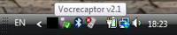 По двойному щелчку по иконке запустится окно Program manager: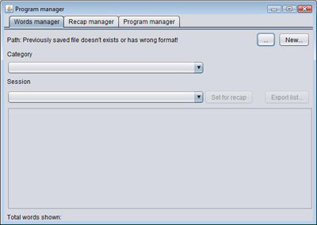 Открытие существующего словаряДля открытия существующего словаря нажмите кнопку... и выберите нужный файл в появившемся диалоге открытия файла.
том случае, если выбран файл неверного формата, появится сообщение: Создание словаряВ этом случае необходимо создать новый словарь. Для того чтобы сделать это, нажмите кнопкуNew... и в появившемся диалоге сохранения файлов укажите
расположение файла, его название и расширение (вы можете указать расширение .txt или любое другое):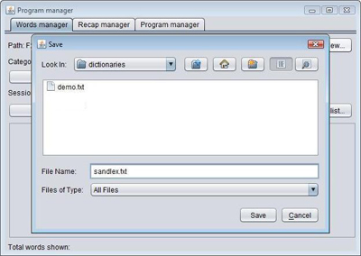 Созданный словарь будет установлен в качестве текущего словаря программы: 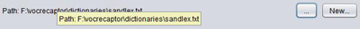 Запуск редактораЗакройтеProgram manager. Нажмите правой кнопкой мыши на иконке программы в системном трее
и в контекстном меню выберите пункт Words editor: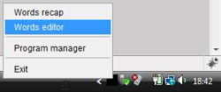 Если не был указан файл словаря, появится нотификационное сообщение:  В этом случае необходимо запустить Program manager и задать файл словаря (?).
Если словарь был указан корректно, то появится окно Editor: Использование сессийКаждый раз, когда вы запускаете окно редактора слов, запускается новая сессия. В течение сессии вы можете вводить любое количество слов в словарь, и все эти слова будут сохранены внутри данной сессии. Это позволит вам позже выполнить повторение слов из какой-либо выбранной сессии. Зачем это нужно? Предположим, что вы делаете задания для завтрашних курсов и добавляете все незнакомые слова внутри одной сессии. На одном из следующих уроков преподаватель может предложить вам выучить все слова из одного из предыдущих занятий, чтобы выполнить проверочную работу. Вы сможете легко повторить все нужные слова, зная дату и время нужной сессии.каждый раз при запуске редактора слов приложение спрашивает, желаете ли вы начать новую сессию или продолжить предыдущую:  Если вы хотите, чтобы была продолжена предыдущая сессия (например, если она была случайно закрыта), вы дожны нажать кнопку Continue previous, иначе нажмите кнопку
Start new.Создание категории словДля добавления слова необходимо выбрать его категорию из спискаCategory
или создать новую категорию, нажав на кнопку New... и указав ее название: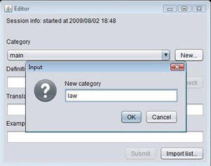 Нажмите OK и категория будет добавления в список категорий и выбрана в качестве
категории слова.
Добавление словаПосле этого необходимо указать определение слова (поле вводаDefinition),
перевод на нужный язык (поле ввода Translation) и пример использования слова
(поле ввода Example of usage).
Поле Definition является обязательным, так что кнопка Submit
будет оставаться недоступной до тех пор, пока не введено определение слова. Нажмите кнопку Submit
чтобы добавить слово в словарь. Поля ввода очистятся и вы сможете приступить
к вводу следующего слова. Если введенное слово уже содержится в словаре, появится таблица со возможными дублирующимися словами: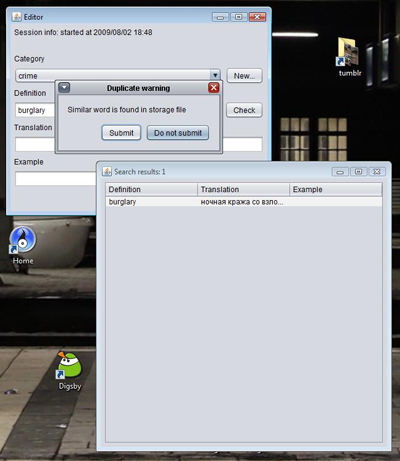 Здесь вы увидите все слова и комбинации слов с введенным словом: Если вы не хотите добавлять слово в словарь - нажмите кнопку Do not submit, иначе нажмите Submit.Рекомендуется выполнять предварительный поиск определения слова в словаре до его добавления. Для того, чтобы выполнить проверку, нажмите кнопку Check... сразу после того, как
вы ввели определение слова. Если определение уже содержится в словаре, появится таблица со возможными дублирующимися словами: Если вводимое определение не присутствует в словаре, кнопка Check... станет недоступной, и
вы сможете продолжить ввод: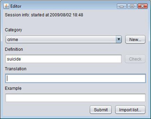 Импрот слов из файлаЕсли вы не хотите заполнять словарь пословно, вы можете импортировать список слов из файла. Файл должен иметь текстовый формат и содержать строки следующего вида:определение[разделитель-табуляция]перевод[разделитель-табуляция]пример использования.
Импорт возможен только из файлов, удовлетворящих данному формату. Все слова будут добавлены в
рамках одной сессии и будут включены в выбранную категорию.Для импорта списка слов нажмите кнопку Import... и в появившемся диалоге
укажите файл-источник:
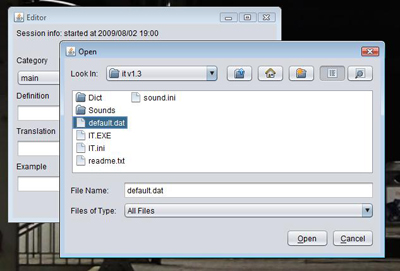После нажатия кнопки Open начнется операция импорта и по ее завршении вы увидите нотификационное
сообщение в области системного трея: Если во время операции импорта произойдут ошибки, то в области системного трея появится нотификационное сообщение об ошибке. Работа с менеджером программыПосле добавления новых слов можно начать их изучение. Двойным щелчком по иконке программы в системном трее запускаемProgram manager. Убедитесь, что в качестве пути словаря
указан нужный файл. Список Category содержит все имеющиеся в словаре категории, а список
Session содержит все сессии: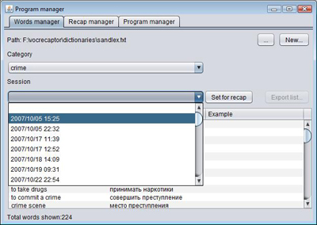 Просмотр списка словВы можете выбрать любую комбинацию этих параметров. Например, вы можете выбрать все слова категорииcrimeвсе слова вчерашней сессии или все слова категории crime сегодняшней сессии.
Для того, чтобы выбрать все категории из списка, выберите пустую строку, которая идет первой в каждом
из списков. Для просмотра списка слов достаточно выбрать значение категории и сессии: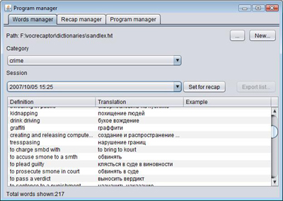 Под текстовым полем расположен счетчик слов, отображающий количество слов, удовлетворяющих выбранным критериям. Запуск окна повторенийСейчас вы хотите приступить к повторению слов из списка. Щелкние правой кнопкой на иконке программы в системном трее и выберите пункт менюWords recap: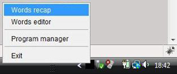 Запустится окно Recap. Для удобства перетащите окно поближе к системному трею. Данное окно
всегда будет находиться поверх других открытых окон операционной системы: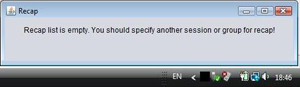 Установка списка слов повторенийКак вы увидите из сообщения, список повторений пуст, и для повторения необходимо указать сессию и категорию слов. Перейдите в окноProgram manager и нажмите кнопку Set for recap (?).В окне Recap начнут периодически меняться слова из списка: сначала показывается определение,
потом ниже появляется перевод, а затем пример использования, если он указан. Установка свойств режима повторенийВы можете указать желаемую длительность интервалов отображения определений, переводов и примеров использования. Откройте вкладкуRecap manager окна Program manager: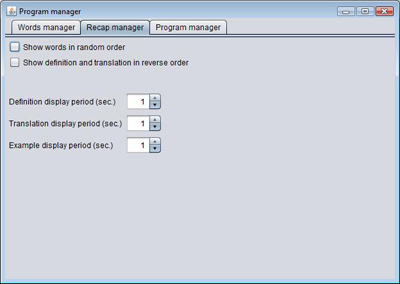 Здесь вы можете выбрать длительность отображения для каждого из данных параметров. Если вы хотите повторять слова в обратном порядке (сначала появляется перевод слова, затем определение) - установите параметр Show definition and translation in reverse
order. Если вы хотите, чтобы слова отображались в случайном порядке - установите соответствующий параметр.Экспорт списка повторений в файлProgram manager позволяет экспортировать текущий список повторений в текстовый файл (для дальнейшего
распечатывания). Чтобы сделать это переключитесь на вкладку Words manager окна
Program manager и нажмите кнопку Export list... (?).Обратите внимание, что кнопка Export list... доступна только в том случае, если задан список повторений (?).
Нажмите эту кнопку и укажите файл, в который хотите сохранить список: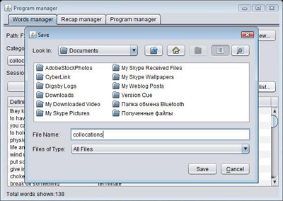 По завершении операции экспорта вы получите нотификационное сообщение в области системного трея: 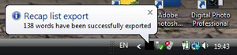 Теперь можно открыть файл, распечатать и повесить на видном месте (например, на стенку или на дверь туалета). Настройка графического интерфейса программыПрограмма является кросс-платформенной, поэтому внешний вид интерфейса может различаться в зависомости от используемой платформы. Также вы сами можете выбрать наиболее подходящий для вас графический интерфейс. Откройте вкладкуProgram manager окна Program manager.
Здесь вы можете выбрать желаемый Look and feel mode из доступных в спике: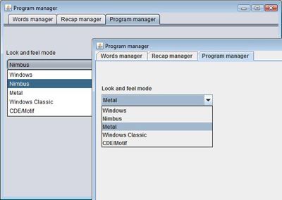 Некоторые из них являются кросс-платформенными (например, Metal), некоторые поддерживаются только ОС Windows (Windows, Windows classic). Список доступных интерфейсов будет различаться между платформами. |
| Alexey Peskov, 2007-2009 | |